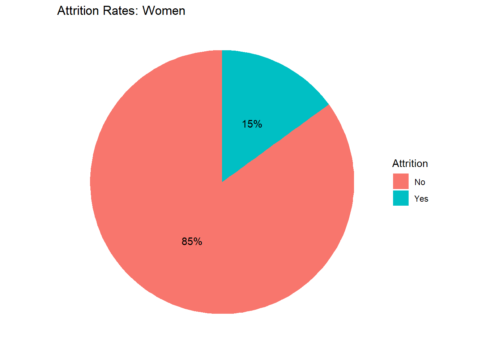

Attrition Project
Steven Mann
8/13/2020
##Executive Summary ## This is a presentation on predicting employee turnover in Frito Lay. An interaction between ## Job Role & OverTime was determined to be the best indicator in predicting employee turnover rates.
#Read in the Data
CaseStudy = read.csv(file.choose(),header=TRUE,stringsAsFactors = TRUE)
NoAttrition = read.csv(file.choose(),header = TRUE, stringsAsFactors = TRUE)
NoSalary = read.csv(file.choose(),header = TRUE, stringsAsFactors = TRUE)#Load in the Libraries
library(tidyverse)## Warning: package 'tidyverse' was built under R version 4.0.2## -- Attaching packages --------------------------------------- tidyverse 1.3.0 --## v ggplot2 3.3.0 v purrr 0.3.4
## v tibble 3.0.1 v dplyr 0.8.5
## v tidyr 1.0.3 v stringr 1.4.0
## v readr 1.3.1 v forcats 0.5.0## -- Conflicts ------------------------------------------ tidyverse_conflicts() --
## x dplyr::filter() masks stats::filter()
## x dplyr::lag() masks stats::lag()library(ggplot2)
library(caret)## Loading required package: lattice##
## Attaching package: 'caret'## The following object is masked from 'package:purrr':
##
## liftlibrary(e1071)
library(leaps)## Warning: package 'leaps' was built under R version 4.0.2library(stats)
library(rsq)## Warning: package 'rsq' was built under R version 4.0.2library(Metrics)## Warning: package 'Metrics' was built under R version 4.0.2##
## Attaching package: 'Metrics'## The following objects are masked from 'package:caret':
##
## precision, recalllibrary(kknn)## Warning: package 'kknn' was built under R version 4.0.2##
## Attaching package: 'kknn'## The following object is masked from 'package:caret':
##
## contr.dummy##Create factor variables out of variables brought in as integers
names <- c('RelationshipSatisfaction','PerformanceRating','WorkLifeBalance',
'JobInvolvement','JobSatisfaction','JobLevel','StockOptionLevel',
'Education','EnvironmentSatisfaction')
CaseStudy[,names] <- lapply(CaseStudy[,names],factor,ordered = TRUE)
NoAttrition[,names] <- lapply(NoAttrition[,names],factor,ordered = TRUE)
NoSalary[,names] <- lapply(NoSalary[,names],factor,ordered = TRUE)#Create new variable for job OT
CaseStudy <- CaseStudy %>% mutate(JobRole_OT = paste(JobRole,OverTime,sep = "_"))
CaseStudy$JobRole_OT = as.factor(CaseStudy$JobRole_OT)
NoSalary <- NoSalary %>% mutate(JobRole_OT = paste(JobRole,OverTime,sep = "_"))
NoSalary$JobRole_OT = as.factor(NoSalary$JobRole_OT)#Create categorical variable for Monthly Income based on summary statistics
IncomeSum = summary(CaseStudy$MonthlyIncome)
CaseStudy$MonthlyIncomeHL = as.factor(if_else(CaseStudy$MonthlyIncome <= IncomeSum[2],"Lowest",
if_else(CaseStudy$MonthlyIncome <= IncomeSum[3],"Medium/Low",
if_else(CaseStudy$MonthlyIncome <= IncomeSum[4],"Medium/High","High"))))#Create a categorical variable for Monthly Income based on summary statistics
TotalWorkSum = summary(CaseStudy$TotalWorkingYears)
CaseStudy$TotalWorkHL = as.factor(if_else(CaseStudy$TotalWorkingYears <= TotalWorkSum[2],"<=6",
if_else(CaseStudy$TotalWorkingYears <= TotalWorkSum[3],"6< <=10",
if_else(CaseStudy$TotalWorkingYears <= TotalWorkSum[5],"10< <=15",">15"))))CaseStudyClean <- CaseStudy[,c("Attrition","JobRole_OT","MonthlyIncomeHL","JobInvolvement","WorkLifeBalance","TotalWorkHL",
"JobLevel","StockOptionLevel","MaritalStatus","Gender")]##Pie chart for overall attrition rate
data <- data.frame(a=CaseStudy$Attrition)
data <- data %>%
group_by(a) %>%
count() %>%
ungroup() %>%
mutate(per=`n`/sum(`n`)) %>%
arrange(desc(a))
data$label <- scales::percent(data$per)
ggplot(data=data)+
geom_bar(aes(x="", y=per, fill=a), stat="identity", width = 1)+
coord_polar("y", start=0)+
theme_void()+
geom_text(aes(x=1, y = cumsum(per) - per/2, label=label)) +
labs(title = "Attrition Rates: Overall",fill = "Attrition")
#Split into Job Involvement Subsets for Plotting
Involvement1 = CaseStudy %>% filter(JobInvolvement == 1)
Involvement2 = CaseStudy %>% filter(JobInvolvement == 2)
Involvement3 = CaseStudy %>% filter(JobInvolvement == 3)
Involvement4 = CaseStudy %>% filter(JobInvolvement == 4)
#Plot Pie chart for Job Involvement = 1
data <- data.frame(a=Involvement1$Attrition)
data <- data %>%
group_by(a) %>%
count() %>%
ungroup() %>%
mutate(per=`n`/sum(`n`)) %>%
arrange(desc(a))
data$label <- scales::percent(data$per)
ggplot(data=data)+
geom_bar(aes(x="", y=per, fill=a), stat="identity", width = 1)+
coord_polar("y", start=0)+
theme_void()+
geom_text(aes(x=1, y = cumsum(per) - per/2, label=label)) +
labs(title = "Attrition Rates: Job Involvement = 1",fill = "Attrition")
#Plot Pie chart for Job Involvement = 2
data <- data.frame(a=Involvement2$Attrition)
data <- data %>%
group_by(a) %>%
count() %>%
ungroup() %>%
mutate(per=`n`/sum(`n`)) %>%
arrange(desc(a))
data$label <- scales::percent(data$per)
ggplot(data=data)+
geom_bar(aes(x="", y=per, fill=a), stat="identity", width = 1)+
coord_polar("y", start=0)+
theme_void()+
geom_text(aes(x=1, y = cumsum(per) - per/2, label=label)) +
labs(title = "Attrition Rates: Job Involvement = 2",fill = "Attrition")
#Plot Pie chart for Job Involvement = 3
data <- data.frame(a=Involvement3$Attrition)
data <- data %>%
group_by(a) %>%
count() %>%
ungroup() %>%
mutate(per=`n`/sum(`n`)) %>%
arrange(desc(a))
data$label <- scales::percent(data$per)
ggplot(data=data)+
geom_bar(aes(x="", y=per, fill=a), stat="identity", width = 1)+
coord_polar("y", start=0)+
theme_void()+
geom_text(aes(x=1, y = cumsum(per) - per/2, label=label)) +
labs(title = "Attrition Rates: Job Involvement = 3",fill = "Attrition")
#Plot Pie chart for Job Involvement = 4
data <- data.frame(a=Involvement4$Attrition)
data <- data %>%
group_by(a) %>%
count() %>%
ungroup() %>%
mutate(per=`n`/sum(`n`)) %>%
arrange(desc(a))
data$label <- scales::percent(data$per)
ggplot(data=data)+
geom_bar(aes(x="", y=per, fill=a), stat="identity", width = 1)+
coord_polar("y", start=0)+
theme_void()+
geom_text(aes(x=1, y = cumsum(per) - per/2, label=label)) +
labs(title = "Attrition Rates: Job Involvement = 4",fill = "Attrition")
#Split into Job Level Subsets for Plotting
Level1 = CaseStudy %>% filter(JobLevel == 1)
Level2 = CaseStudy %>% filter(JobLevel == 2)
Level3 = CaseStudy %>% filter(JobLevel == 3)
Level4 = CaseStudy %>% filter(JobLevel == 4)
Level5 = CaseStudy %>% filter(JobLevel == 5)
#Plot Pie chart for Job Level = 1
data <- data.frame(a=Level1$Attrition)
data <- data %>%
group_by(a) %>%
count() %>%
ungroup() %>%
mutate(per=`n`/sum(`n`)) %>%
arrange(desc(a))
data$label <- scales::percent(data$per)
ggplot(data=data)+
geom_bar(aes(x="", y=per, fill=a), stat="identity", width = 1)+
coord_polar("y", start=0)+
theme_void()+
geom_text(aes(x=1, y = cumsum(per) - per/2, label=label)) +
labs(title = "Attrition Rates: Job Level = 1",fill = "Attrition")
#Plot Pie chart for Job Level = 2
data <- data.frame(a=Level2$Attrition)
data <- data %>%
group_by(a) %>%
count() %>%
ungroup() %>%
mutate(per=`n`/sum(`n`)) %>%
arrange(desc(a))
data$label <- scales::percent(data$per)
ggplot(data=data)+
geom_bar(aes(x="", y=per, fill=a), stat="identity", width = 1)+
coord_polar("y", start=0)+
theme_void()+
geom_text(aes(x=1, y = cumsum(per) - per/2, label=label)) +
labs(title = "Attrition Rates: Job Level = 2",fill = "Attrition")
#Plot Pie chart for Job Level = 3
data <- data.frame(a=Level3$Attrition)
data <- data %>%
group_by(a) %>%
count() %>%
ungroup() %>%
mutate(per=`n`/sum(`n`)) %>%
arrange(desc(a))
data$label <- scales::percent(data$per)
ggplot(data=data)+
geom_bar(aes(x="", y=per, fill=a), stat="identity", width = 1)+
coord_polar("y", start=0)+
theme_void()+
geom_text(aes(x=1, y = cumsum(per) - per/2, label=label)) +
labs(title = "Attrition Rates: Job Level = 3",fill = "Attrition")
#Plot Pie chart for Job Level = 4
data <- data.frame(a=Level4$Attrition)
data <- data %>%
group_by(a) %>%
count() %>%
ungroup() %>%
mutate(per=`n`/sum(`n`)) %>%
arrange(desc(a))
data$label <- scales::percent(data$per)
ggplot(data=data)+
geom_bar(aes(x="", y=per, fill=a), stat="identity", width = 1)+
coord_polar("y", start=0)+
theme_void()+
geom_text(aes(x=1, y = cumsum(per) - per/2, label=label)) +
labs(title = "Attrition Rates: Job Level = 4",fill = "Attrition")
#Plot Pie chart for Job Level = 5
data <- data.frame(a=Level5$Attrition)
data <- data %>%
group_by(a) %>%
count() %>%
ungroup() %>%
mutate(per=`n`/sum(`n`)) %>%
arrange(desc(a))
data$label <- scales::percent(data$per)
ggplot(data=data)+
geom_bar(aes(x="", y=per, fill=a), stat="identity", width = 1)+
coord_polar("y", start=0)+
theme_void()+
geom_text(aes(x=1, y = cumsum(per) - per/2, label=label)) +
labs(title = "Attrition Rates: Job Level = 5",fill = "Attrition")
##JobRole_OT Data
#Split into Job ROle Subsets for Plotting
Healthcare = CaseStudy %>% filter(JobRole == "Healthcare Representative")
HRRole = CaseStudy %>% filter(JobRole == "Human Resources")
Lab = CaseStudy %>% filter(JobRole == "Laboratory Technician")
Manager = CaseStudy %>% filter(JobRole == "Manager")
Manu = CaseStudy %>% filter(JobRole == "Manufacturing Director")
ResearchDirector = CaseStudy %>% filter(JobRole == "Research Director")
ResearchScientist = CaseStudy %>% filter(JobRole == "Research Scientist")
SalesExec = CaseStudy %>% filter(JobRole == "Sales Executive")
SalesRep = CaseStudy %>% filter(JobRole == "Sales Representative")
#Split into Overtime Status Subsets for Plotting
NOOT = CaseStudy %>% filter(OverTime == "No")
OT = CaseStudy %>% filter(OverTime == "Yes")
#Split into Job ROle & OT Status Subsets for Plotting
HealthcareOT = CaseStudy %>% filter(JobRole_OT == "Healthcare Representative_Yes")
HealthcareNOOT = CaseStudy %>% filter(JobRole_OT == "Healthcare Representative_No")
HRRoleOT = CaseStudy %>% filter(JobRole_OT == "Human Resources_Yes")
HRRoleNOOT = CaseStudy %>% filter(JobRole_OT == "Human Resources_No")
LabOT = CaseStudy %>% filter(JobRole_OT == "Laboratory Technician_Yes")
LabNOOT = CaseStudy %>% filter(JobRole_OT == "Laboratory Technician_No")
ManagerOT = CaseStudy %>% filter(JobRole_OT == "Manager_Yes")
ManagerNOOT = CaseStudy %>% filter(JobRole_OT == "Manager_No")
ManuOT = CaseStudy %>% filter(JobRole_OT == "Manufacturing Director_Yes")
ManuNOOT = CaseStudy %>% filter(JobRole_OT == "Manufacturing Director_No")
ResearchDirectorOT = CaseStudy %>% filter(JobRole_OT == "Research Director_Yes")
ResearchDirectorNOOT = CaseStudy %>% filter(JobRole_OT == "Research Director_No")
ResearchScientistOT = CaseStudy %>% filter(JobRole_OT == "Research Scientist_Yes")
ResearchScientistNOOT = CaseStudy %>% filter(JobRole_OT == "Research Scientist_No")
SalesExecOT = CaseStudy %>% filter(JobRole_OT == "Sales Executive_Yes")
SalesExecNOOT = CaseStudy %>% filter(JobRole_OT == "Sales Executive_No")
SalesRepOT = CaseStudy %>% filter(JobRole_OT == "Sales Representative_Yes")
SalesRepNOOT = CaseStudy %>% filter(JobRole_OT == "Sales Representative_No")
#Plot Pie charts for Healthcare
#OT
data <- data.frame(a=HealthcareOT$Attrition)
data <- data %>%
group_by(a) %>%
count() %>%
ungroup() %>%
mutate(per=`n`/sum(`n`)) %>%
arrange(desc(a))
data$label <- scales::percent(data$per)
ggplot(data=data)+
geom_bar(aes(x="", y=per, fill=a), stat="identity", width = 1)+
coord_polar("y", start=0)+
theme_void()+
geom_text(aes(x=1, y = cumsum(per) - per/2, label=label)) +
labs(title = "Attrition Rates: Overtime Healthcare",fill = "Attrition")#No OT
data <- data.frame(a=HealthcareNOOT$Attrition)
data <- data %>%
group_by(a) %>%
count() %>%
ungroup() %>%
mutate(per=`n`/sum(`n`)) %>%
arrange(desc(a))
data$label <- scales::percent(data$per)
ggplot(data=data)+
geom_bar(aes(x="", y=per, fill=a), stat="identity", width = 1)+
coord_polar("y", start=0)+
theme_void()+
geom_text(aes(x=1, y = cumsum(per) - per/2, label=label)) +
labs(title = "Attrition Rates: Non-Overtime Healthcare",fill = "Attrition")#Plot Pie charts for HR
#OT
data <- data.frame(a=HRRoleOT$Attrition)
data <- data %>%
group_by(a) %>%
count() %>%
ungroup() %>%
mutate(per=`n`/sum(`n`)) %>%
arrange(desc(a))
data$label <- scales::percent(data$per)
ggplot(data=data)+
geom_bar(aes(x="", y=per, fill=a), stat="identity", width = 1)+
coord_polar("y", start=0)+
theme_void()+
geom_text(aes(x=1, y = cumsum(per) - per/2, label=label)) +
labs(title = "Attrition Rates: Overtime Human Resources",fill = "Attrition")
#No OT
data <- data.frame(a=HRRoleNOOT$Attrition)
data <- data %>%
group_by(a) %>%
count() %>%
ungroup() %>%
mutate(per=`n`/sum(`n`)) %>%
arrange(desc(a))
data$label <- scales::percent(data$per)
ggplot(data=data)+
geom_bar(aes(x="", y=per, fill=a), stat="identity", width = 1)+
coord_polar("y", start=0)+
theme_void()+
geom_text(aes(x=1, y = cumsum(per) - per/2, label=label)) +
labs(title = "Attrition Rates: Non-Overtime Human Resources",fill = "Attrition")#Plot Pie charts for Lab Tech
#OT
data <- data.frame(a=LabOT$Attrition)
data <- data %>%
group_by(a) %>%
count() %>%
ungroup() %>%
mutate(per=`n`/sum(`n`)) %>%
arrange(desc(a))
data$label <- scales::percent(data$per)
ggplot(data=data)+
geom_bar(aes(x="", y=per, fill=a), stat="identity", width = 1)+
coord_polar("y", start=0)+
theme_void()+
geom_text(aes(x=1, y = cumsum(per) - per/2, label=label)) +
labs(title = "Attrition Rates: Overtime Lab Tech",fill = "Attrition")#No OT
data <- data.frame(a=LabNOOT$Attrition)
data <- data %>%
group_by(a) %>%
count() %>%
ungroup() %>%
mutate(per=`n`/sum(`n`)) %>%
arrange(desc(a))
data$label <- scales::percent(data$per)
ggplot(data=data)+
geom_bar(aes(x="", y=per, fill=a), stat="identity", width = 1)+
coord_polar("y", start=0)+
theme_void()+
geom_text(aes(x=1, y = cumsum(per) - per/2, label=label)) +
labs(title = "Attrition Rates: Non-Overtime Lab Tech",fill = "Attrition")#Plot Pie charts for Manager
#OT
data <- data.frame(a=ManagerOT$Attrition)
data <- data %>%
group_by(a) %>%
count() %>%
ungroup() %>%
mutate(per=`n`/sum(`n`)) %>%
arrange(desc(a))
data$label <- scales::percent(data$per)
ggplot(data=data)+
geom_bar(aes(x="", y=per, fill=a), stat="identity", width = 1)+
coord_polar("y", start=0)+
theme_void()+
geom_text(aes(x=1, y = cumsum(per) - per/2, label=label)) +
labs(title = "Attrition Rates: Overtime Manager",fill = "Attrition")#No OT
data <- data.frame(a=ManagerNOOT$Attrition)
data <- data %>%
group_by(a) %>%
count() %>%
ungroup() %>%
mutate(per=`n`/sum(`n`)) %>%
arrange(desc(a))
data$label <- scales::percent(data$per)
ggplot(data=data)+
geom_bar(aes(x="", y=per, fill=a), stat="identity", width = 1)+
coord_polar("y", start=0)+
theme_void()+
geom_text(aes(x=1, y = cumsum(per) - per/2, label=label)) +
labs(title = "Attrition Rates: Non-Overtime Manager",fill = "Attrition")#Plot Pie charts for Manufacturing Director
#OT
data <- data.frame(a=ManuOT$Attrition)
data <- data %>%
group_by(a) %>%
count() %>%
ungroup() %>%
mutate(per=`n`/sum(`n`)) %>%
arrange(desc(a))
data$label <- scales::percent(data$per)
ggplot(data=data)+
geom_bar(aes(x="", y=per, fill=a), stat="identity", width = 1)+
coord_polar("y", start=0)+
theme_void()+
geom_text(aes(x=1, y = cumsum(per) - per/2, label=label)) +
labs(title = "Attrition Rates: Overtime Manufacturing Director",fill = "Attrition")#No OT
data <- data.frame(a=ManuNOOT$Attrition)
data <- data %>%
group_by(a) %>%
count() %>%
ungroup() %>%
mutate(per=`n`/sum(`n`)) %>%
arrange(desc(a))
data$label <- scales::percent(data$per)
ggplot(data=data)+
geom_bar(aes(x="", y=per, fill=a), stat="identity", width = 1)+
coord_polar("y", start=0)+
theme_void()+
geom_text(aes(x=1, y = cumsum(per) - per/2, label=label)) +
labs(title = "Attrition Rates: Non-Overtime Manufacturing Director",fill = "Attrition")#Plot Pie charts for Research Director
#OT
data <- data.frame(a=ResearchDirectorOT$Attrition)
data <- data %>%
group_by(a) %>%
count() %>%
ungroup() %>%
mutate(per=`n`/sum(`n`)) %>%
arrange(desc(a))
data$label <- scales::percent(data$per)
ggplot(data=data)+
geom_bar(aes(x="", y=per, fill=a), stat="identity", width = 1)+
coord_polar("y", start=0)+
theme_void()+
geom_text(aes(x=1, y = cumsum(per) - per/2, label=label)) +
labs(title = "Attrition Rates: Overtime Research Director",fill = "Attrition")#No OT
data <- data.frame(a=ResearchDirectorNOOT$Attrition)
data <- data %>%
group_by(a) %>%
count() %>%
ungroup() %>%
mutate(per=`n`/sum(`n`)) %>%
arrange(desc(a))
data$label <- scales::percent(data$per)
ggplot(data=data)+
geom_bar(aes(x="", y=per, fill=a), stat="identity", width = 1)+
coord_polar("y", start=0)+
theme_void()+
geom_text(aes(x=1, y = cumsum(per) - per/2, label=label)) +
labs(title = "Attrition Rates: Non-Overtime Research Director",fill = "Attrition")
#Plot Pie charts for Research Scientist
#OT
data <- data.frame(a=ResearchScientistOT$Attrition)
data <- data %>%
group_by(a) %>%
count() %>%
ungroup() %>%
mutate(per=`n`/sum(`n`)) %>%
arrange(desc(a))
data$label <- scales::percent(data$per)
ggplot(data=data)+
geom_bar(aes(x="", y=per, fill=a), stat="identity", width = 1)+
coord_polar("y", start=0)+
theme_void()+
geom_text(aes(x=1, y = cumsum(per) - per/2, label=label)) +
labs(title = "Attrition Rates: Overtime Research Scientist",fill = "Attrition")#No OT
data <- data.frame(a=ResearchScientistNOOT$Attrition)
data <- data %>%
group_by(a) %>%
count() %>%
ungroup() %>%
mutate(per=`n`/sum(`n`)) %>%
arrange(desc(a))
data$label <- scales::percent(data$per)
ggplot(data=data)+
geom_bar(aes(x="", y=per, fill=a), stat="identity", width = 1)+
coord_polar("y", start=0)+
theme_void()+
geom_text(aes(x=1, y = cumsum(per) - per/2, label=label)) +
labs(title = "Attrition Rates: Non-Overtime Research Scientist",fill = "Attrition")#Plot Pie charts for Sales Executive
#OT
data <- data.frame(a=SalesExecOT$Attrition)
data <- data %>%
group_by(a) %>%
count() %>%
ungroup() %>%
mutate(per=`n`/sum(`n`)) %>%
arrange(desc(a))
data$label <- scales::percent(data$per)
ggplot(data=data)+
geom_bar(aes(x="", y=per, fill=a), stat="identity", width = 1)+
coord_polar("y", start=0)+
theme_void()+
geom_text(aes(x=1, y = cumsum(per) - per/2, label=label)) +
labs(title = "Attrition Rates: Overtime Sales Executive",fill = "Attrition")#No OT
data <- data.frame(a=SalesExecNOOT$Attrition)
data <- data %>%
group_by(a) %>%
count() %>%
ungroup() %>%
mutate(per=`n`/sum(`n`)) %>%
arrange(desc(a))
data$label <- scales::percent(data$per)
ggplot(data=data)+
geom_bar(aes(x="", y=per, fill=a), stat="identity", width = 1)+
coord_polar("y", start=0)+
theme_void()+
geom_text(aes(x=1, y = cumsum(per) - per/2, label=label)) +
labs(title = "Attrition Rates: Non-Overtime Sales Executive",fill = "Attrition")#Plot Pie charts for Sales Rep
#OT
data <- data.frame(a=SalesRepOT$Attrition)
data <- data %>%
group_by(a) %>%
count() %>%
ungroup() %>%
mutate(per=`n`/sum(`n`)) %>%
arrange(desc(a))
data$label <- scales::percent(data$per)
ggplot(data=data)+
geom_bar(aes(x="", y=per, fill=a), stat="identity", width = 1)+
coord_polar("y", start=0)+
theme_void()+
geom_text(aes(x=1, y = cumsum(per) - per/2, label=label)) +
labs(title = "Attrition Rates: Overtime Sales Rep",fill = "Attrition")#No OT
data <- data.frame(a=SalesRepNOOT$Attrition)
data <- data %>%
group_by(a) %>%
count() %>%
ungroup() %>%
mutate(per=`n`/sum(`n`)) %>%
arrange(desc(a))
data$label <- scales::percent(data$per)
ggplot(data=data)+
geom_bar(aes(x="", y=per, fill=a), stat="identity", width = 1)+
coord_polar("y", start=0)+
theme_void()+
geom_text(aes(x=1, y = cumsum(per) - per/2, label=label)) +
labs(title = "Attrition Rates: Non-Overtime Sales Executive",fill = "Attrition")#Split into Stock Option Subsets for Plotting
Options0 = CaseStudy %>% filter(StockOptionLevel == "0")
Options1 = CaseStudy %>% filter(StockOptionLevel == "1")
Options2 = CaseStudy %>% filter(StockOptionLevel == "2")
Options3 = CaseStudy %>% filter(StockOptionLevel == "3")
#Plot Pie chart for Stock Option Level 0
data <- data.frame(a=Options0$Attrition)
data <- data %>%
group_by(a) %>%
count() %>%
ungroup() %>%
mutate(per=`n`/sum(`n`)) %>%
arrange(desc(a))
data$label <- scales::percent(data$per)
ggplot(data=data)+
geom_bar(aes(x="", y=per, fill=a), stat="identity", width = 1)+
coord_polar("y", start=0)+
theme_void()+
geom_text(aes(x=1, y = cumsum(per) - per/2, label=label)) +
labs(title = "Attrition Rates: Stock Option Level = 0",fill = "Attrition")
#Plot Pie chart for Stock Option Level 1
data <- data.frame(a=Options1$Attrition)
data <- data %>%
group_by(a) %>%
count() %>%
ungroup() %>%
mutate(per=`n`/sum(`n`)) %>%
arrange(desc(a))
data$label <- scales::percent(data$per)
ggplot(data=data)+
geom_bar(aes(x="", y=per, fill=a), stat="identity", width = 1)+
coord_polar("y", start=0)+
theme_void()+
geom_text(aes(x=1, y = cumsum(per) - per/2, label=label)) +
labs(title = "Attrition Rates: Stock Option Level = 1",fill = "Attrition")
#Plot Pie chart for Stock Option Level 2
data <- data.frame(a=Options2$Attrition)
data <- data %>%
group_by(a) %>%
count() %>%
ungroup() %>%
mutate(per=`n`/sum(`n`)) %>%
arrange(desc(a))
data$label <- scales::percent(data$per)
ggplot(data=data)+
geom_bar(aes(x="", y=per, fill=a), stat="identity", width = 1)+
coord_polar("y", start=0)+
theme_void()+
geom_text(aes(x=1, y = cumsum(per) - per/2, label=label)) +
labs(title = "Attrition Rates: Stock Option Level = 2",fill = "Attrition")
#Plot Pie chart for Stock Option Level 3
data <- data.frame(a=Options3$Attrition)
data <- data %>%
group_by(a) %>%
count() %>%
ungroup() %>%
mutate(per=`n`/sum(`n`)) %>%
arrange(desc(a))
data$label <- scales::percent(data$per)
ggplot(data=data)+
geom_bar(aes(x="", y=per, fill=a), stat="identity", width = 1)+
coord_polar("y", start=0)+
theme_void()+
geom_text(aes(x=1, y = cumsum(per) - per/2, label=label)) +
labs(title = "Attrition Rates: Stock Option Level = 3",fill = "Attrition")
##Marital Status
#Split into Marital Status Subsets for Plotting
Divorced = CaseStudy %>% filter(MaritalStatus == "Divorced")
Married = CaseStudy %>% filter(MaritalStatus == "Married")
Single = CaseStudy %>% filter(MaritalStatus == "Single")
#Plot Pie chart for Divorced
data <- data.frame(a=Divorced$Attrition)
data <- data %>%
group_by(a) %>%
count() %>%
ungroup() %>%
mutate(per=`n`/sum(`n`)) %>%
arrange(desc(a))
data$label <- scales::percent(data$per)
ggplot(data=data)+
geom_bar(aes(x="", y=per, fill=a), stat="identity", width = 1)+
coord_polar("y", start=0)+
theme_void()+
geom_text(aes(x=1, y = cumsum(per) - per/2, label=label)) +
labs(title = "Attrition Rates: Divorced",fill = "Attrition")
#Plot Pie chart for Married
data <- data.frame(a=Married$Attrition)
data <- data %>%
group_by(a) %>%
count() %>%
ungroup() %>%
mutate(per=`n`/sum(`n`)) %>%
arrange(desc(a))
data$label <- scales::percent(data$per)
ggplot(data=data)+
geom_bar(aes(x="", y=per, fill=a), stat="identity", width = 1)+
coord_polar("y", start=0)+
theme_void()+
geom_text(aes(x=1, y = cumsum(per) - per/2, label=label)) +
labs(title = "Attrition Rates: Married",fill = "Attrition")
#Plot Pie chart for Married
data <- data.frame(a=Single$Attrition)
data <- data %>%
group_by(a) %>%
count() %>%
ungroup() %>%
mutate(per=`n`/sum(`n`)) %>%
arrange(desc(a))
data$label <- scales::percent(data$per)
ggplot(data=data)+
geom_bar(aes(x="", y=per, fill=a), stat="identity", width = 1)+
coord_polar("y", start=0)+
theme_void()+
geom_text(aes(x=1, y = cumsum(per) - per/2, label=label)) +
labs(title = "Attrition Rates: Single",fill = "Attrition")
#Split into Work/Life Balance Subsets for Plotting
WorkLife1 = CaseStudy %>% filter(WorkLifeBalance == 1)
WorkLife2 = CaseStudy %>% filter(WorkLifeBalance == 2)
WorkLife3 = CaseStudy %>% filter(WorkLifeBalance == 3)
WorkLife4 = CaseStudy %>% filter(WorkLifeBalance == 4)
#Plot Pie chart for Work Life Balance = 1
data <- data.frame(a=WorkLife1$Attrition)
data <- data %>%
group_by(a) %>%
count() %>%
ungroup() %>%
mutate(per=`n`/sum(`n`)) %>%
arrange(desc(a))
data$label <- scales::percent(data$per)
ggplot(data=data)+
geom_bar(aes(x="", y=per, fill=a), stat="identity", width = 1)+
coord_polar("y", start=0)+
theme_void()+
geom_text(aes(x=1, y = cumsum(per) - per/2, label=label)) +
labs(title = "Attrition Rates: Work/Life Balance = 1",fill = "Attrition")
#Plot Pie chart for Work Life Balance = 2
data <- data.frame(a=WorkLife2$Attrition)
data <- data %>%
group_by(a) %>%
count() %>%
ungroup() %>%
mutate(per=`n`/sum(`n`)) %>%
arrange(desc(a))
data$label <- scales::percent(data$per)
ggplot(data=data)+
geom_bar(aes(x="", y=per, fill=a), stat="identity", width = 1)+
coord_polar("y", start=0)+
theme_void()+
geom_text(aes(x=1, y = cumsum(per) - per/2, label=label)) +
labs(title = "Attrition Rates: Work/Life Balance = 2",fill = "Attrition")
#Plot Pie chart for Work Life Balance = 3
data <- data.frame(a=WorkLife3$Attrition)
data <- data %>%
group_by(a) %>%
count() %>%
ungroup() %>%
mutate(per=`n`/sum(`n`)) %>%
arrange(desc(a))
data$label <- scales::percent(data$per)
ggplot(data=data)+
geom_bar(aes(x="", y=per, fill=a), stat="identity", width = 1)+
coord_polar("y", start=0)+
theme_void()+
geom_text(aes(x=1, y = cumsum(per) - per/2, label=label)) +
labs(title = "Attrition Rates: Work/Life Balance = 3",fill = "Attrition")
#Plot Pie chart for Work Life Balance = 4
data <- data.frame(a=WorkLife4$Attrition)
data <- data %>%
group_by(a) %>%
count() %>%
ungroup() %>%
mutate(per=`n`/sum(`n`)) %>%
arrange(desc(a))
data$label <- scales::percent(data$per)
ggplot(data=data)+
geom_bar(aes(x="", y=per, fill=a), stat="identity", width = 1)+
coord_polar("y", start=0)+
theme_void()+
geom_text(aes(x=1, y = cumsum(per) - per/2, label=label)) +
labs(title = "Attrition Rates: Work/Life Balance = 4",fill = "Attrition")
#Split into Gender Subsets for Plotting
Male = CaseStudy %>% filter(Gender == "Male")
Female = CaseStudy %>% filter(Gender == "Female")
#Plot Pie chart for Men
data <- data.frame(a=Male$Attrition)
data <- data %>%
group_by(a) %>%
count() %>%
ungroup() %>%
mutate(per=`n`/sum(`n`)) %>%
arrange(desc(a))
data$label <- scales::percent(data$per)
ggplot(data=data)+
geom_bar(aes(x="", y=per, fill=a), stat="identity", width = 1)+
coord_polar("y", start=0)+
theme_void()+
geom_text(aes(x=1, y = cumsum(per) - per/2, label=label)) +
labs(title = "Attrition Rates: Men",fill = "Attrition")#Plot Pie chart for Women
data <- data.frame(a=Female$Attrition)
data <- data %>%
group_by(a) %>%
count() %>%
ungroup() %>%
mutate(per=`n`/sum(`n`)) %>%
arrange(desc(a))
data$label <- scales::percent(data$per)
ggplot(data=data)+
geom_bar(aes(x="", y=per, fill=a), stat="identity", width = 1)+
coord_polar("y", start=0)+
theme_void()+
geom_text(aes(x=1, y = cumsum(per) - per/2, label=label)) +
labs(title = "Attrition Rates: Women",fill = "Attrition")
Monthly Income Boxplot
CaseStudy %>%
ggplot(aes(y = MonthlyIncome,fill = Attrition)) +
geom_boxplot() +
facet_wrap(~Attrition) +
labs(title = "Attrition by Monthly Income",y = "Monthly Income")
Total Working Years
CaseStudy %>% ggplot(aes(y = TotalWorkingYears,fill = Attrition)) +
geom_boxplot() +
facet_wrap(~Attrition) +
labs(title = "Attrition by Total Working Years",y = "Total Working Years")
##KNN
testmodel = train.kknn(Attrition ~ JobRole_OT + MonthlyIncomeHL + JobInvolvement +
WorkLifeBalance + TotalWorkHL + JobLevel + StockOptionLevel +
MaritalStatus + Gender,
data = CaseStudy,kmax = 15,
kernel = c("rectangular","triangular","epanechnikov","gaussian","rank","optimal"),scale = TRUE)
model = train.kknn(Attrition ~ JobRole_OT + MonthlyIncomeHL + JobInvolvement +
WorkLifeBalance + TotalWorkHL + JobLevel + StockOptionLevel +
MaritalStatus + Gender,
data = CaseStudy,ks = testmodel$best.parameters$k,
kernel = testmodel$best.parameters$kernel,scale = TRUE)
preds = predict(model,newdata = CaseStudy)
CM = confusionMatrix(preds,CaseStudy$Attrition)
CM## Confusion Matrix and Statistics
##
## Reference
## Prediction No Yes
## No 726 26
## Yes 4 114
##
## Accuracy : 0.9655
## 95% CI : (0.9511, 0.9766)
## No Information Rate : 0.8391
## P-Value [Acc > NIR] : < 2.2e-16
##
## Kappa : 0.8637
##
## Mcnemar's Test P-Value : 0.000126
##
## Sensitivity : 0.9945
## Specificity : 0.8143
## Pos Pred Value : 0.9654
## Neg Pred Value : 0.9661
## Prevalence : 0.8391
## Detection Rate : 0.8345
## Detection Prevalence : 0.8644
## Balanced Accuracy : 0.9044
##
## 'Positive' Class : No
## ##Set up the data for the competition set
NoAttrition[,names] <- lapply(NoAttrition[,names],factor,ordered = TRUE)
#Create new variables for job OT & Job Gender
NoAttrition <- NoAttrition %>% mutate(JobRole_OT = paste(JobRole,OverTime,sep = "_"))
NoAttrition$JobRole_OT = as.factor(NoAttrition$JobRole_OT)
NoAttrition$MonthlyIncomeHL = as.factor(if_else(NoAttrition$MonthlyIncome <= IncomeSum[2],"Lowest",
if_else(NoAttrition$MonthlyIncome <= IncomeSum[3],"Medium/Low",
if_else(NoAttrition$MonthlyIncome <= IncomeSum[4],"Medium/High","High"))))
NoAttrition$TotalWorkHL = as.factor(if_else(NoAttrition$TotalWorkingYears <= TotalWorkSum[2],"<=6",
if_else(NoAttrition$TotalWorkingYears <= TotalWorkSum[3],"6< <=10",
if_else(NoAttrition$TotalWorkingYears <= TotalWorkSum[5],"10< <=15",">15"))))Run predictions on the competition set using kknn
testmodel = train.kknn(Attrition ~ JobRole_OT + MonthlyIncomeHL + JobInvolvement +
WorkLifeBalance + TotalWorkHL + JobLevel + StockOptionLevel +
MaritalStatus + Gender,
data = CaseStudy,kmax = 25,
kernel = c("rectangular","triangular","epanechnikov","gaussian","rank","optimal"),scale = TRUE)
model = train.kknn(Attrition ~ JobRole_OT + MonthlyIncomeHL + JobInvolvement +
WorkLifeBalance + TotalWorkHL + JobLevel + StockOptionLevel +
MaritalStatus + Gender,
data = CaseStudy,ks = testmodel$best.parameters$k,
kernel = testmodel$best.parameters$kernel,scale = TRUE)
NoAttrition$predictions = predict(model,newdata = NoAttrition)##Write the data to a csv for submission
NoAttritionSubmit = NoAttrition[,c("ID","predictions")]
path_out = "C:\\Users\\Steve Mann\\OneDrive\\Desktop\\"
write.csv(NoAttritionSubmit,"C:\\Users\\Steve Mann\\OneDrive\\Desktop\\Case2PredictionsMann_Attrition.csv")##Write a model to predict Monthly Income. ##Model was adjusted manually by stepwise regression. It is likely there are other variables ##or ineraction variables that would be considered significant, however, as the mean RMSE on ##1000 iterations of 70/30 train/test split is ~1000, I decided to stop.
#Summary statistics of model
summary(model)##
## Call:
## lm(formula = MonthlyIncome ~ ., data = train)
##
## Residuals:
## Min 1Q Median 3Q Max
## -3193.2 -600.2 -79.4 610.4 4135.0
##
## Coefficients: (1 not defined because of singularities)
## Estimate Std. Error t value Pr(>|t|)
## (Intercept) 8701.310 236.053 36.862 < 2e-16 ***
## OverTimeYes -1337.859 368.302 -3.633 0.000305 ***
## TotalWorkingYears 47.306 8.977 5.270 1.92e-07 ***
## JobRole_OTHealthcare Representative_Yes 1304.482 399.589 3.265 0.001160 **
## JobRole_OTHuman Resources_No -1088.397 319.954 -3.402 0.000715 ***
## JobRole_OTHuman Resources_Yes 282.840 575.440 0.492 0.623243
## JobRole_OTLaboratory Technician_No -1379.281 223.031 -6.184 1.17e-09 ***
## JobRole_OTLaboratory Technician_Yes 386.248 362.094 1.067 0.286544
## JobRole_OTManager_No 3130.264 305.628 10.242 < 2e-16 ***
## JobRole_OTManager_Yes 4954.798 497.240 9.965 < 2e-16 ***
## JobRole_OTManufacturing Director_No 7.766 215.590 0.036 0.971278
## JobRole_OTManufacturing Director_Yes 1596.352 447.488 3.567 0.000390 ***
## JobRole_OTResearch Director_No 3412.198 280.155 12.180 < 2e-16 ***
## JobRole_OTResearch Director_Yes 4949.533 457.941 10.808 < 2e-16 ***
## JobRole_OTResearch Scientist_No -1039.045 230.154 -4.515 7.67e-06 ***
## JobRole_OTResearch Scientist_Yes 496.498 330.879 1.501 0.134012
## JobRole_OTSales Executive_No 128.498 186.798 0.688 0.491787
## JobRole_OTSales Executive_Yes 1467.506 365.629 4.014 6.75e-05 ***
## JobRole_OTSales Representative_No -1185.598 283.417 -4.183 3.31e-05 ***
## JobRole_OTSales Representative_Yes NA NA NA NA
## JobLevel.L 9035.242 303.214 29.798 < 2e-16 ***
## JobLevel.Q 676.432 153.308 4.412 1.22e-05 ***
## JobLevel.C -649.084 130.227 -4.984 8.20e-07 ***
## JobLevel^4 136.703 115.955 1.179 0.238901
## ---
## Signif. codes: 0 '***' 0.001 '**' 0.01 '*' 0.05 '.' 0.1 ' ' 1
##
## Residual standard error: 982.2 on 587 degrees of freedom
## Multiple R-squared: 0.9567, Adjusted R-squared: 0.9551
## F-statistic: 589.7 on 22 and 587 DF, p-value: < 2.2e-16MeanRMSE = colMeans(RootMSE)
MeanR_Square = colMeans(R_Square)
MeanRMSE## [1] 1026.005MeanR_Square## [1] 0.9497524NoSalary## ID Age Attrition BusinessTravel DailyRate Department DistanceFromHome Education EducationField
## 1 871 43 No Travel_Frequently 1422 Sales 2 4 Life Sciences
## 2 872 33 No Travel_Rarely 461 Research & Development 13 1 Life Sciences
## 3 873 55 Yes Travel_Rarely 267 Sales 13 4 Marketing
## 4 874 36 No Non-Travel 1351 Research & Development 9 4 Life Sciences
## 5 875 27 No Travel_Rarely 1302 Research & Development 19 3 Other
## 6 876 39 Yes Travel_Rarely 895 Sales 5 3 Technical Degree
## 7 877 33 No Non-Travel 750 Sales 22 2 Marketing
## 8 878 21 Yes Travel_Frequently 251 Research & Development 10 2 Life Sciences
## 9 879 30 No Travel_Frequently 1312 Research & Development 23 3 Life Sciences
## 10 880 51 No Travel_Rarely 1405 Research & Development 11 2 Technical Degree
## 11 881 46 Yes Travel_Rarely 377 Sales 9 3 Marketing
## 12 882 40 No Travel_Rarely 329 Research & Development 1 4 Life Sciences
## 13 883 29 No Travel_Rarely 1176 Sales 3 2 Medical
## 14 884 27 No Travel_Frequently 829 Sales 8 1 Marketing
## 15 885 29 No Travel_Rarely 1210 Sales 2 3 Medical
## 16 886 22 Yes Travel_Rarely 617 Research & Development 3 1 Life Sciences
## 17 887 29 No Travel_Rarely 726 Research & Development 29 1 Life Sciences
## 18 888 34 No Travel_Rarely 167 Research & Development 8 5 Life Sciences
## 19 889 31 No Travel_Rarely 655 Research & Development 7 4 Life Sciences
## 20 890 35 No Travel_Rarely 528 Human Resources 8 4 Technical Degree
## 21 891 40 No Travel_Rarely 523 Research & Development 2 3 Life Sciences
## 22 892 30 No Travel_Rarely 1288 Sales 29 4 Technical Degree
## 23 893 46 Yes Travel_Rarely 669 Sales 9 2 Medical
## 24 894 27 No Travel_Frequently 1410 Sales 3 1 Medical
## 25 895 49 No Travel_Rarely 1490 Research & Development 7 4 Life Sciences
## 26 896 46 No Travel_Rarely 706 Research & Development 2 2 Life Sciences
## 27 897 33 Yes Travel_Rarely 211 Sales 16 3 Life Sciences
## EmployeeCount EmployeeNumber EnvironmentSatisfaction Gender HourlyRate JobInvolvement JobLevel
## 1 1 1849 1 Male 92 3 2
## 2 1 995 2 Female 53 3 1
## 3 1 1372 1 Male 85 4 4
## 4 1 1949 1 Male 66 4 1
## 5 1 1619 4 Male 67 2 1
## 6 1 42 4 Male 56 3 2
## 7 1 160 3 Male 95 3 2
## 8 1 1279 1 Female 45 2 1
## 9 1 159 1 Male 96 1 1
## 10 1 1367 4 Female 82 2 4
## 11 1 1457 1 Male 52 3 3
## 12 1 1361 2 Male 88 3 1
## 13 1 690 2 Female 62 3 2
## 14 1 800 3 Male 84 3 2
## 15 1 366 1 Male 78 2 2
## 16 1 926 2 Female 34 3 2
## 17 1 1859 4 Male 93 1 2
## 18 1 775 2 Female 32 3 2
## 19 1 76 4 Male 48 3 2
## 20 1 1164 3 Male 100 3 1
## 21 1 1346 3 Male 98 3 2
## 22 1 1568 3 Male 33 3 3
## 23 1 118 3 Male 64 2 3
## 24 1 714 4 Female 71 4 2
## 25 1 1484 3 Male 35 3 3
## 26 1 1857 4 Male 82 3 3
## 27 1 1758 1 Female 74 3 3
## JobRole JobSatisfaction MaritalStatus MonthlyRate NumCompaniesWorked Over18 OverTime
## 1 Sales Executive 4 Married 19246 1 Y No
## 2 Research Scientist 4 Single 17241 3 Y No
## 3 Sales Executive 3 Single 9277 6 Y Yes
## 4 Laboratory Technician 2 Married 9238 1 Y No
## 5 Laboratory Technician 1 Divorced 16290 1 Y No
## 6 Sales Representative 4 Married 3335 3 Y No
## 7 Sales Executive 2 Married 15480 0 Y No
## 8 Laboratory Technician 3 Single 25308 1 Y No
## 9 Research Scientist 3 Divorced 22310 1 Y No
## 10 Manufacturing Director 2 Single 24439 3 Y No
## 11 Sales Executive 4 Divorced 15986 4 Y No
## 12 Laboratory Technician 2 Married 6762 3 Y No
## 13 Sales Executive 3 Married 3487 1 Y No
## 14 Sales Executive 4 Married 24008 0 Y No
## 15 Sales Executive 2 Married 3687 2 Y No
## 16 Manufacturing Director 3 Married 10022 0 Y Yes
## 17 Healthcare Representative 3 Divorced 21143 8 Y No
## 18 Manufacturing Director 1 Divorced 4187 3 Y No
## 19 Laboratory Technician 4 Divorced 9528 3 Y No
## 20 Human Resources 3 Single 7108 1 Y No
## 21 Research Scientist 4 Single 22455 1 Y No
## 22 Sales Executive 2 Married 17799 3 Y No
## 23 Sales Executive 4 Single 13596 1 Y No
## 24 Sales Executive 4 Divorced 16673 1 Y Yes
## 25 Healthcare Representative 2 Divorced 20948 3 Y No
## 26 Manufacturing Director 4 Divorced 19989 3 Y No
## 27 Sales Executive 1 Single 10092 2 Y Yes
## PercentSalaryHike PerformanceRating RelationshipSatisfaction StandardHours StockOptionLevel TotalWorkingYears
## 1 20 4 3 80 1 7
## 2 18 3 1 80 0 5
## 3 17 3 3 80 0 24
## 4 22 4 2 80 0 5
## 5 11 3 1 80 2 7
## 6 14 3 3 80 1 19
## 7 13 3 1 80 1 8
## 8 20 4 3 80 0 2
## 9 25 4 3 80 3 10
## 10 16 3 2 80 0 29
## 11 11 3 1 80 1 28
## 12 22 4 3 80 1 7
## 13 14 3 1 80 1 6
## 14 19 3 2 80 1 5
## 15 19 3 2 80 2 10
## 16 19 3 1 80 1 4
## 17 17 3 4 80 2 11
## 18 14 3 3 80 1 7
## 19 22 4 4 80 1 10
## 20 17 3 2 80 0 6
## 21 13 3 3 80 0 9
## 22 12 3 2 80 1 9
## 23 16 3 4 80 0 9
## 24 20 4 2 80 2 6
## 25 14 3 2 80 2 29
## 26 14 3 3 80 1 12
## 27 20 4 3 80 0 11
## TrainingTimesLastYear WorkLifeBalance YearsAtCompany YearsInCurrentRole YearsSinceLastPromotion
## 1 5 3 7 7 7
## 2 4 3 3 2 0
## 3 2 2 19 7 3
## 4 3 3 5 4 0
## 5 3 3 7 7 0
## 6 6 4 1 0 0
## 7 2 4 7 7 0
## 8 2 1 2 2 2
## 9 2 2 10 7 0
## 10 1 2 5 2 0
## 11 1 4 7 7 4
## 12 3 3 4 2 0
## 13 5 2 6 0 1
## 14 3 3 4 2 1
## 15 2 3 0 0 0
## 16 3 4 3 2 0
## 17 3 3 7 0 1
## 18 3 3 0 0 0
## 19 3 2 7 7 1
## 20 2 1 5 4 1
## 21 4 3 9 8 8
## 22 3 3 4 2 1
## 23 3 3 9 8 4
## 24 3 3 6 5 0
## 25 3 3 8 7 0
## 26 4 2 9 8 4
## 27 2 2 0 0 0
## YearsWithCurrManager JobRole_OT
## 1 7 Sales Executive_No
## 2 2 Research Scientist_No
## 3 8 Sales Executive_Yes
## 4 2 Laboratory Technician_No
## 5 7 Laboratory Technician_No
## 6 0 Sales Representative_No
## 7 7 Sales Executive_No
## 8 2 Laboratory Technician_No
## 9 9 Research Scientist_No
## 10 3 Manufacturing Director_No
## 11 3 Sales Executive_No
## 12 3 Laboratory Technician_No
## 13 2 Sales Executive_No
## 14 1 Sales Executive_No
## 15 0 Sales Executive_No
## 16 2 Manufacturing Director_Yes
## 17 6 Healthcare Representative_No
## 18 0 Manufacturing Director_No
## 19 7 Laboratory Technician_No
## 20 4 Human Resources_No
## 21 8 Research Scientist_No
## 22 3 Sales Executive_No
## 23 7 Sales Executive_No
## 24 4 Sales Executive_Yes
## 25 7 Healthcare Representative_No
## 26 7 Manufacturing Director_No
## 27 0 Sales Executive_Yes
## [ reached 'max' / getOption("max.print") -- omitted 273 rows ]newdata <- NoSalary[,c("OverTime","TotalWorkingYears","JobRole_OT","JobLevel")]
model <- lm(MonthlyIncome ~ .,data = data)
newdata$predictions <- model %>% predict(newdata)## Warning in predict.lm(., newdata): prediction from a rank-deficient fit may be misleadingnewdata$ID = NoSalary$ID
newdata_submit = newdata[,c("ID","predictions")]
path_out = "C:\\Users\\Steve Mann\\OneDrive\\Desktop\\"
write.csv(newdata_submit,"C:\\Users\\Steve Mann\\OneDrive\\Desktop\\Case2PredictionsMann_Salary.csv")
newdata_submit## ID predictions
## 1 871 5591.842
## 2 872 2786.537
## 3 873 13033.049
## 4 874 2569.055
## 5 875 2661.681
## 6 876 4973.767
## 7 877 5638.156
## 8 878 2430.115
## 9 879 3018.104
## 10 880 13378.418
## 11 881 9788.094
## 12 882 2661.681
## 13 883 5545.529
## 14 884 5499.216
## 15 885 5730.782
## 16 886 5556.928
## 17 887 5866.752
## 18 888 5786.835
## 19 889 4474.661
## 20 890 2804.995
## 21 891 4645.830
## 22 892 8908.142
## 23 893 8908.142
## 24 894 5626.719
## 25 895 9924.064
## 26 896 9242.075
## 27 897 9081.958
## 28 898 16387.458
## 29 899 5730.782
## 30 900 2832.851
## 31 901 2615.368
## 32 902 5777.096
## 33 903 6101.288
## 34 904 2707.995
## 35 905 16337.577
## 36 906 5452.903
## 37 907 9367.487
## 38 908 5833.149
## 39 909 2618.486
## 40 910 2601.284
## 41 911 19307.534
## 42 912 2795.923
## 43 913 2661.681
## 44 914 12432.800
## 45 915 5833.149
## 46 916 4243.095
## 47 917 2693.911
## 48 918 5499.216
## 49 919 2466.088
## 50 920 3081.619
## 51 921 2605.028
## 52 922 2383.802
## 53 923 4428.348
## 54 924 4664.288
## 55 925 16800.709
## 56 926 2988.992
## 57 927 5730.782
## 58 928 12960.032
## 59 929 2572.173
## 60 930 2707.995
## 61 931 6043.538
## 62 932 12496.899
## 63 933 8954.455
## 64 934 2664.799
## 65 935 2383.802
## 66 936 2711.112
## 67 937 9368.305
## 68 938 9519.955
## 69 939 5062.650
## 70 940 2466.088
## 71 941 3032.188
## 72 942 9000.769
## 73 943 9788.094
## 74 944 5647.896
## 75 945 2419.775
## 76 946 5635.185
## 77 947 2466.088
## 78 948 2693.911
## 79 949 2842.237
## 80 950 5719.345
## 81 951 3018.104
## 82 952 5638.156
## 83 953 5727.812
## 84 954 2803.739
## 85 955 4428.348
## 86 956 7841.648
## 87 957 10399.907
## 88 958 2800.621
## 89 959 9545.091
## 90 960 19876.821
## 91 961 2832.851
## 92 962 4645.830
## 93 963 5959.378
## 94 964 4756.914
## 95 965 2647.597
## 96 966 19367.375
## 97 967 2786.537
## 98 968 8954.455
## 99 969 16615.456
## 100 970 2757.426
## 101 971 5591.842
## 102 972 5634.368
## 103 973 2757.426
## 104 974 2601.284
## 105 975 5694.209
## 106 976 2807.021
## 107 977 6237.258
## 108 978 2832.851
## 109 979 9382.674
## 110 980 18965.555
## 111 981 2697.654
## 112 982 9267.212
## 113 983 2615.368
## 114 984 2651.341
## 115 985 5638.156
## 116 986 2992.274
## 117 987 2668.081
## 118 988 5591.842
## 119 989 9567.927
## 120 990 2760.708
## 121 991 4803.228
## 122 992 2786.537
## 123 993 4701.530
## 124 994 5499.216
## 125 995 5626.719
## 126 996 4970.023
## 127 997 2693.911
## 128 998 16725.869
## 129 999 9047.082
## 130 1000 2572.173
## 131 1001 4886.783
## 132 1002 4325.381
## 133 1003 4692.143
## 134 1004 6388.908
## 135 1005 3018.104
## 136 1006 5765.659
## 137 1007 2512.401
## 138 1008 5820.439
## 139 1009 19104.494
## 140 1010 4498.454
## 141 1011 9473.641
## 142 1012 4784.770
## 143 1013 5950.912
## 144 1014 4520.974
## 145 1015 5684.469
## 146 1016 2707.995
## 147 1017 2988.992
## 148 1018 8954.455
## 149 1019 9047.082
## 150 1020 2554.971
## 151 1021 5684.469
## 152 1022 5591.842
## 153 1023 4553.204
## 154 1024 9738.811
## 155 1025 16106.010
## 156 1026 18872.928
## 157 1027 4617.975
## 158 1028 5580.406
## 159 1029 5452.903
## 160 1030 8536.347
## 161 1031 5534.092
## 162 1032 2990.248
## 163 1033 12325.174
## 164 1034 2668.081
## 165 1035 4520.974
## 166 1036 2668.081
## 167 1037 5545.529
## 168 1038 8165.841
## 169 1039 12450.586
## 170 1040 5866.752
## 171 1041 2615.368
## 172 1042 2899.648
## 173 1043 8954.455
## 174 1044 6182.478
## 175 1045 2786.537
## 176 1046 2383.802
## 177 1047 5786.835
## 178 1048 12340.173
## 179 1049 2992.274
## 180 1050 5673.032
## 181 1051 10260.967
## 182 1052 2707.995
## 183 1053 5541.741
## 184 1054 2832.851
## 185 1055 2832.851
## 186 1056 2615.368
## 187 1057 5740.522
## 188 1058 16433.772
## 189 1059 5081.107
## 190 1060 2832.851
## 191 1061 4831.083
## 192 1062 5879.462
## 193 1063 6052.005
## 194 1064 2361.281
## 195 1065 5726.995
## 196 1066 2569.055
## 197 1067 3481.236
## 198 1068 19428.687
## 199 1069 5499.216
## 200 1070 2605.028
## 201 1071 2651.341
## 202 1072 6064.715
## 203 1073 2512.401
## 204 1074 5820.439
## 205 1075 5545.529
## 206 1076 16430.203
## 207 1077 19104.494
## 208 1078 4474.661
## 209 1079 4692.143
## 210 1080 5108.963
## 211 1081 2925.477
## 212 1082 2740.224
## 213 1083 2466.088
## 214 1084 5962.349
## 215 1085 9149.448
## 216 1086 9498.778
## 217 1087 5545.529
## 218 1088 2899.648
## 219 1089 2899.648
## 220 1090 5626.719
## 221 1091 5673.032
## 222 1092 5962.349
## 223 1093 12371.488
## 224 1094 5591.842
## 225 1095 5635.185
## 226 1096 5833.149
## 227 1097 3342.297
## 228 1098 2804.995
## 229 1099 2707.995
## 230 1100 5925.775
## 231 1101 18872.928
## 232 1102 5638.156
## 233 1103 5869.722
## 234 1104 10193.477
## 235 1105 2925.477
## 236 1106 2925.477
## 237 1107 3038.588
## 238 1108 4664.288
## 239 1109 5591.842
## 240 1110 5545.529
## 241 1111 6052.005
## 242 1112 12714.248
## 243 1113 12760.561
## 244 1114 6182.478
## 245 1115 9738.811
## 246 1116 2925.477
## 247 1117 6205.314
## 248 1118 4474.661
## 249 1119 9506.427
## 250 1120 2592.847
## 251 1121 9498.778
## 252 1122 16383.890
## 253 1123 4692.143
## 254 1124 16152.324
## 255 1125 2647.597
## 256 1126 2466.088
## 257 1127 2803.739
## 258 1128 4428.348
## 259 1129 16152.324
## 260 1130 2522.742
## 261 1131 12450.586
## 262 1132 16387.458
## 263 1133 5820.439
## 264 1134 2522.742
## 265 1135 2800.621
## 266 1136 2615.368
## 267 1137 3124.814
## 268 1138 5730.782
## 269 1139 9278.648
## 270 1140 16031.170
## 271 1141 5820.439
## 272 1142 5730.782
## 273 1143 9831.437
## 274 1144 5452.903
## 275 1145 4794.156
## 276 1146 5638.156
## 277 1147 4289.408
## 278 1148 2522.742
## 279 1149 2693.911
## 280 1150 5866.752
## 281 1151 2740.224
## 282 1152 5638.156
## 283 1153 5155.276
## 284 1154 2572.173
## 285 1155 6203.655
## 286 1156 12902.575
## 287 1157 2453.908
## 288 1158 4990.507
## 289 1159 2740.224
## 290 1160 5786.835
## 291 1161 2899.648
## 292 1162 9058.481
## 293 1163 2846.934
## 294 1164 9242.075
## 295 1165 2992.274
## 296 1166 2430.115
## 297 1167 9229.365
## 298 1168 5545.529
## 299 1169 2832.851
## 300 1170 2992.274